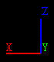
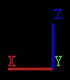

Variable
Name
Command-Line
Override
Value
This allows you to manually specify the quality of the JPEG compression. Lower is faster but also grainier. The default setting should produce visually lossless performance.
This allows you to manually specify the level of chrominance subsampling in the JPEG compressor.
By default, VirtualGL
uses no chrominance subsampling (AKA "4:4:4 subsampling") when it
compresses images for delivery to the client. Subsampling is
premised on the fact that the
human eye is more sensitive to changes in brightness than to changes in
color. Since the JPEG image format uses a colorspace in which
brightness (luminance) and color (chrominance) are separated into
different channels, one can sample the brightness for every pixel and
the color for every other pixel and produce visually a 16-million color
image using on average only 16 bits per pixel instead of 24.
This is called "4:2:2 subsampling", since for every 4 pixels of
luminance, there are only 2 pixels of each chrominance
component. Likewise, one can sample every fourth chrominance
component to produce a 16-million color image with only 12 bits per
pixel. The latter is called "4:1:1 subsampling."
Subsampling increases the performance and reduces the network usage,
since there is less data to move around, but it can produce some
visible artifacts. Subsampling artifacts are rarely observed
with volume data, since it usually only contains 256 colors to begin
with. But narrow, aliased lines and other sharp features on a
black background will tend to produce subsampling artifacts.
The Axis Indicator from a
Popular Visualization App
|
4:4:4 |
4:2:2 |
4:1:1 |
|  |  |
 |
Note: If you select
4:1:1 subsampling, VirtualGL will in fact try to use 4:2:0
instead. 4:2:0 samples every other pixel both horizontally and
vertically rather than sampling every fourth pixel horizontally.
But not all JPEG codecs support 4:2:0, so 4:1:1 is used when 4:2:0 is
not available.
=<0, 1>
or
-spoil
By default, VirtualGL will drop frames so as not to slow down the rendering rate of the server's graphics engine. This should produce the best results with interactive applications, but it may be desirable to turn off frame spoiling when running benchmarks or other non-interactive applications. Turning off frame spoiling will force one frame to be read back and sent on each buffer swap, thus allowing benchmarks to accurately measure the frame rate of the entire VirtualGL pipeline. Disabling frame spoiling will also prevent non-interactive applications from wasting graphics resources by rendering frames that will never be seen. With frame spoiling turned off, the rendering pipeline behaves as if it's fill-rate limited to about 30 or 40 Megapixels/second, the maximum throughput of the VirtualGL system on current CPU's.
Normally, VirtualGL loads the first OpenGL .so that it finds in the dynamic linker path (usually the one found in /usr/lib, /usr/lib64, /usr/openwin/lib, or /usr/openwin/lib/sparcv9.) You can use this setting to explicitly specify another OpenGL .so to use.
Normally, you shouldn't need to muck with this unless something doesn't work.
Normally, VirtualGL loads the first X11 .so that it finds in the dynamic linker path (usually the one found in /usr/X11R6/lib, /usr/X11R6/lib64, /usr/openwin/lib, or /usr/openwin/lib/sparcv9.) You can use this setting to explicitly specify another X11 .so to use.
Normally, you shouldn't need to muck with this unless something doesn't work.
If you have a multi-pipe server configuration and want the OpenGL rendering to be done on a display other than :0, set this to :1 or whatever. This could be used, for instance, to support many app instances on a beefy server with multiple 3D graphics cards.
GLP mode:
Setting this option to GLP will enable GLP mode and select the first available GLP device for rendering. You can also set the option to the pathname of a specific GLP device (e.g. /dev/fbs/jfb0.)
VirtualGL uses a dedicated TCP/IP connection to transmit compressed images of the OpenGL rendering area from the server to the client. Thus, the server needs to know on which machine the client software is running. It normally can surmise this from the DISPLAY environment variable. But in cases where X11 is tunneled through a Low-Bandwidth X (LBX) or SSh proxy, the DISPLAY environment variable on the server may not point to the client machine. In these cases, set VGL_CLIENT to the display where the application's GUI will end up.
=<0, 1>
or
-s
Note: You must be running the secure client for this to work. See the VirtualGL User's Guide for more details.
=<0, 1>
When image compression is disabled, VirtualGL will bypass its compressed image delivery system and instead use X11 image drawing commands to composite the 3D area of the window back into the window. This is primarily useful in conjunction with VNC, Citrix for Unix, or another remote display mechanism that performs X11 rendering on the server and contains its own image compression and delivery mechanisms. Performing uncompressed X11 blits to an X server running elsewhere on the network is not typically going to be a very high-performance option.
=<0, 1>
or
-profile
If enabled, this will cause the server to continuously measure and display the pixel throughput of the overall pipeline and of the readback and compression stages.
=<0, 1>
Normally, VirtualGL's operation is asynchronous from the point of view of the application. The application swaps the buffers or calls glFInish() or glFlush() or glXWaitGL(), and VirtualGL reads back the framebuffer and sends the pixels to the client's display ... eventually. This will work fine for a vast majority of applications, but it is not strictly conformant. Rarely, an application may call glXWaitGL() or glFinish() and expect to be able to immediately access the resulting pixels using X11 functions such as XGetImage(). Enabling VGL_SYNC is a somewhat extreme measure that may be needed to get such applications to work properly. It was developed as a way to pass the GLX conformance suite (conformx, specifically.) When VGL_SYNC is enabled, every call to glFinish() or glXWaitGL() will cause the contents of the server's framebuffer to be read back and synchronously drawn into the client's window without frame spoiling. The call to glFinish() or glXWaitGL() does not return until the pixels have been delivered into the client's window, thus enabling this mode can have potentially dire effects on performance.
=<0, 1>
or
-mt
If enabled, the server will divide the task of compressing the frame among all of the available processors, which might speed up the overall throughput if the server's JPEG codec is slow. Enabling multi-threaded compression has no effect on a uniprocessor system.